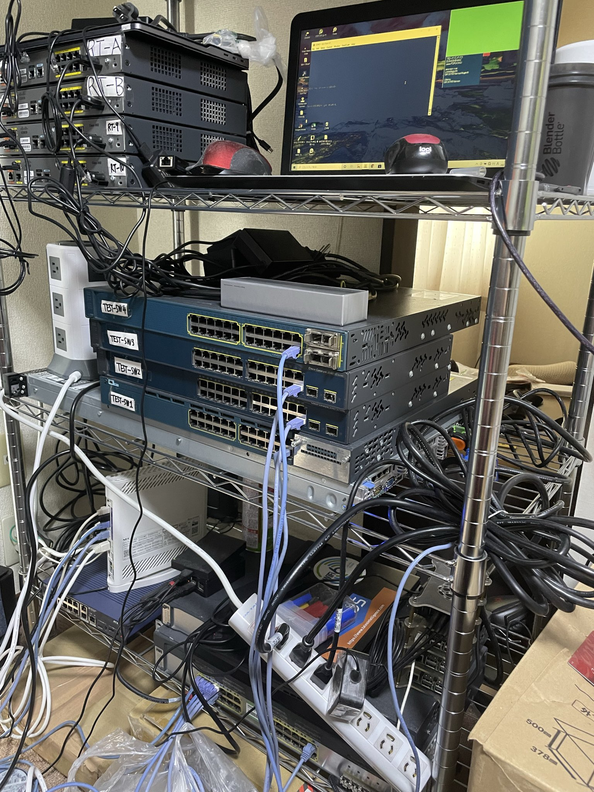

自己PR
NW機器のサポート
機器ベンダーに勤めていたため、ハードウェアのアーキテクチャやソフトウェアに関する問い合わせの対応を行っておりました。 また、外国の開発エンジニアへの問い合わせも行っていたため、英語の読み書きには多少の心得があります。
ユーザとの顧客対応
不具合の報告を定期的にエンドユーザー様へ赴き報告を行っておりました。 またベンダーのサポートとして障害対応時の温度感の高いお客様との電話対応ならびにメールや、報告会などの対応経験もございます。 またトレーニング業務も社内社外両面で担当経験があるため、多少のコミュニケーション能力には自信がございます。
向上心
NW機器ベンダーという恵まれた環境にいたため、検証用に使用できる機器を借り、実際にコンフィグ投入を行い、再現検証等も積極的におこなっておりました。 資格取得や物理機器の操作のための学習も普段から取り組んでおり、自費でNW機器を購入し、小さくはありますが、自宅ラボを作っております。 その他大規模なネットワーク検証にはCML2を使用して検証等行っております。
また、資格取得以外にも業務効率化のためPythonを学び、いくつかの定型作業の自動化に取り組んでおりました。 参考までに作成していたscriptを下記に記載します。
#!/usr/bin/env python
# -*- coding: utf-8 -*-
from netmiko import ConnectHandler
import time
with open('commands.txt') as f:
commands = f.read().splitlines()#1行ずつ読み込む
with open('devices.txt') as f:
devices = f.read().splitlines()#一行ずつ読み込む
for ip in devices:
cisco_device = {
'device_type': 'cisco_ios_telnet',#telnet接続なら必須
'ip': ip,
'username': 'cisco',
'password': 'cisco',
'secret': 'cisco',
}
print('Connecting to ' + ip)
#ssh = connection ,telnet = net_connect
net_connect = ConnectHandler(**cisco_device)
print('Entering enable mode ...')
net_connect.enable()
output = ''
for cmd in commands:
output += net_connect.send_command(cmd + '\n\n', delay_factor=2, strip_command=False, strip_prompt=False)
prompt = net_connect.find_prompt()
#print(prompt)
hostname = prompt[:-1]
#print(hostname)
list = output.split('\n')
list = list[3:]
config = '\n'.join(list)
#print(config)
import datetime
#取得した日のタイムスタンプ
now = datetime.datetime.now()
today = str(now.year) + '-' + str(now.month) + '-' + str(now.day)
file = today + '-' + hostname + '.txt'
with open(file + '.txt', 'w') as backup:
backup.write(config)
print('Backup of ' + hostname + ' completed successfully')
print('#' * 30)
net_connect.disconnec
今後
現在、企業した友人の会社でのネットワークの研修や、企業組織作りなどのお手伝いをさせていただいており、技術だけでなく、 教育や、マネジメント、組織作りといった面にも興味を向けて学んでいきたいと思います。
技術面でいえば、過去、自身が行った自己学習の内容などを技術書同人誌として販売した経験があるので、インフラのみではなく、PythonやRustなど のプログラミング技術の習熟や 新しい技術などの仕組みの解析、調査に取り組み、実際に自宅でサービスをくみ上げるなど取り組み、そういった経験も技術ブログや、技術書同人誌など、 外部へアウトプットしていくという活動に取り組んでいきたいと思っています。